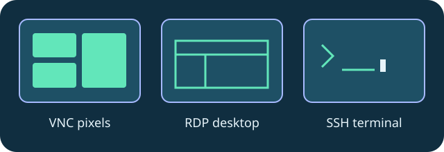
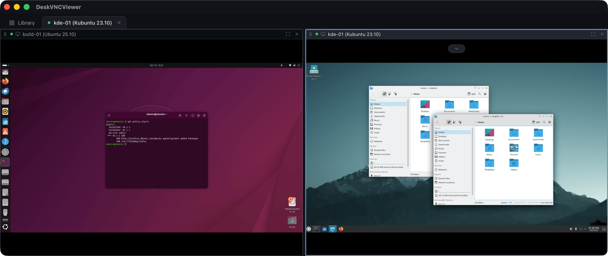

comparison
Desktop pixels or terminal text? Pick the right observation
A positive comparison of workflows built around VNC, RDP and SSH.
Pick the protocol around the work. VNC supplies a remote desktop image; RDP provides the familiar Windows remote session workflow; SSH provides terminal text and command execution. DeskVNC puts all three in the same native client.
Desktop walkthroughs use screen observations, remote pixel coordinates and leased input. Terminal walkthroughs use dvv_term_read, dvv_term_send or dvv_run. A text-only agent can work with SSH; an image-capable agent can interpret desktops.
Tabs and split panes make the combination useful. Keep a deployment terminal next to a desktop validation session, or compare two machines side by side. SFTP transfers and clipboard integration support the surrounding work.
This is a workflow comparison, not a benchmark against other products. The upstream README includes LAN timings for its own measured environment. Those measurements describe that setup, not a universal speed guarantee.


Technical reference: DeskVNC upstream documentation. Reviewed against the saved UPSTREAM-README.md snapshot.